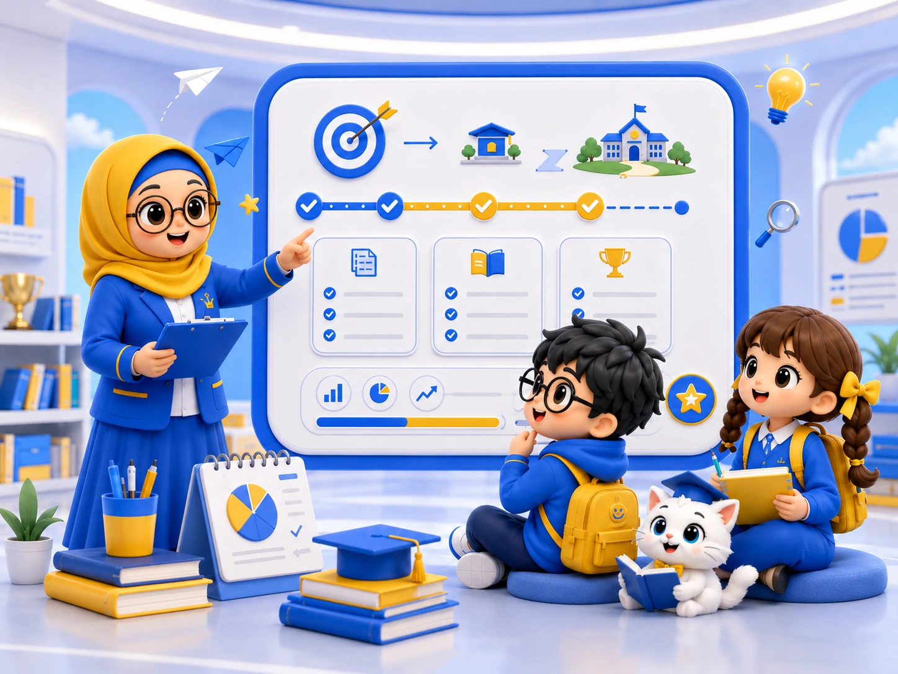
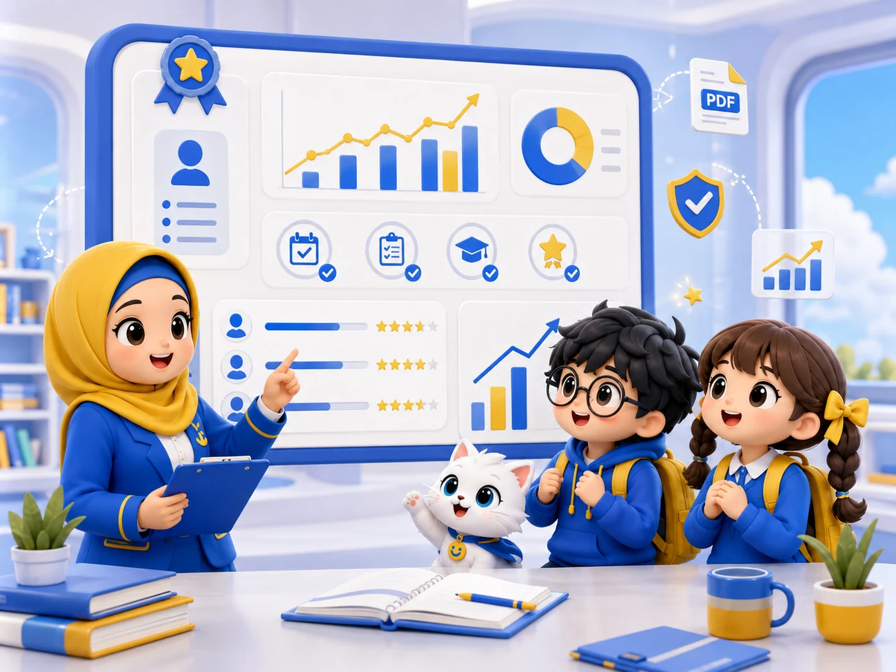

01
Lebih personal
Kelas kecil dan latihan individual membantu tutor melihat kesalahan serta kebutuhan setiap siswa.
Inersia membantu siswa mempersiapkan masuk PTN melalui program belajar yang terarah, latihan sesuai kebutuhan, dan perkembangan yang dapat dipantau oleh siswa maupun orang tua.
Target kampus, kemampuan awal, kedisiplinan, dan hambatan setiap siswa berbeda. Inersia menyusun sistem agar perbedaan tersebut terlihat dan dapat ditindaklanjuti.
Kelas kecil dan latihan individual membantu tutor melihat kesalahan serta kebutuhan setiap siswa.
Assessment dan roadmap membantu siswa mengetahui posisi awal dan prioritas yang perlu dikerjakan.
Tryout, Weekly Progress Check, dan laporan bulanan menunjukkan proses yang benar-benar dijalani siswa.

Inersia menghubungkan assessment, roadmap, kelas, latihan personal, evaluasi mingguan, tryout, dan laporan orang tua dalam satu siklus pembelajaran.
Website utama memperkenalkan setiap program. Detail penawaran dan pendaftaran Small Class ditempatkan pada halaman program khusus agar informasi dan alur pendaftarannya tetap fokus.
Kelas maksimal lima siswa dengan latihan personal, progress mingguan, dan laporan orang tua.
Pendampingan satu siswa melalui sesi daring untuk kebutuhan yang lebih fleksibel dan personal.
Tutor datang ke lokasi siswa untuk proses belajar satu-satu dengan koordinasi jadwal khusus.
Laporan perkembangan bulanan merangkum kehadiran, penyelesaian latihan, hasil tryout, perubahan skor, fokus perbaikan, dan target berikutnya.
Lihat Sistem Pelaporan
Tim Inersia akan membantu memeriksa kota, kelas, target PTN, dan format belajar yang sesuai.